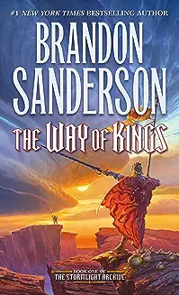
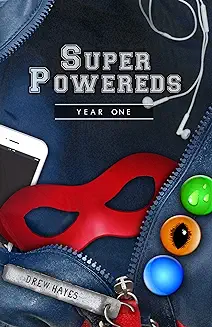
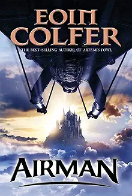
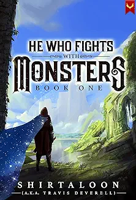
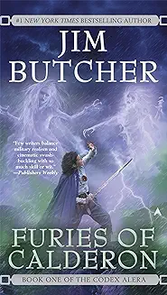
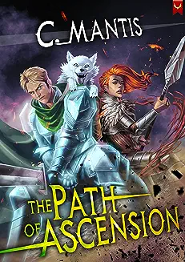
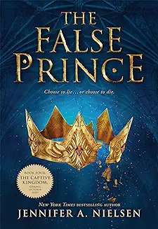
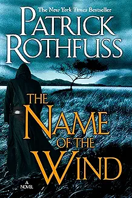
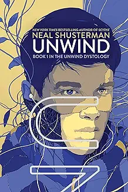
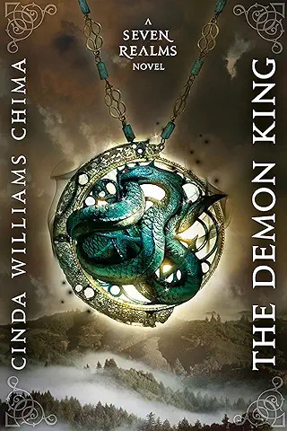

-
The Way of Kings

- Author: Brandon Sanderson
- The Way of Kings takes place on the world of Roshar, where war is constantly being waged on the Shattered Plains, and the Highprinces of Alethkar fight to avenge a king that died many moons ago. The book follows the story of Dalinar, Kaladin, and Shallan as they navigate the turbulent world and uncover their destinies. It is the first book in an ongoing series with 4 published and 6 more planned.
- See it on Goodreads
- Author: Brandon Sanderson
-
Super Powereds

- Author: Drew Hayes
- The premise is that the world is full of mutants (called “Supers”) that are born with special abilities like the ability to fly, turn into steel, or shoot laser beams out of their eyes. However, there are people unable to control their abilities. These people (called “Powereds”) are pitied and despised by the public. Through a experimental procedure, 5 Powereds gain control and enroll in a program to become Heroes.
- See it on Goodreads
- Author: Drew Hayes
-
Airman

- Author: Eoin Colfer
- "Airman" is the thrilling story of a fourteen year old boy named Conor Broekhart who dreams of flight. Unfortunately, his dreams are dashed when Conor is accused of murdering the king and is sent to the dreaded prison island of Little Saltee. He must attempt to escape, using his dream of flight, in order to prove his innocence and save the island from tragedy.
- See it on Goodreads
- Author: Eoin Colfer
-
He Who Fights With Monsters

- Author: Travis Deverell (Shirtaloon)
- Jason wakes up in a mysterious world of magic and monsters. It’s not easy making the career jump from office-supplies-store middle manager to heroic interdimensional adventurer. At least, Jason tries to be heroic, but it’s hard to be good when all your powers are evil. He’ll face off against cannibals, cultists, wizards, monsters…and that’s just on the first day. He’s going to need courage, he’s going to need wit, and he’s going to need some magic powers of his own.
- See it on Goodreads
- Author: Travis Deverell (Shirtaloon)
-
Furies of Calderon

- Author: Jim Butcher
- For a thousand years, the people of Alera have united against the aggressive and threatening races that inhabit the world, using their unique bond with the furies—elementals of earth, air, fire, water, wood, and metal. But in the remote Calderon Valley, the boy Tavi struggles with his lack of furycrafting. At fifteen, he has no wind fury to help him fly, no fire fury to light his lamps. Yet as the Alerans’ most savage enemy—the Marat horde—return to the Valley, Tavi’s courage and resourcefulness will be a power greater than any fury, one that could turn the tides of war...
- See it on Goodreads
- Author: Jim Butcher
-
The Path of Ascension

- Author: C. Mantis
- Matt plans to delve the rifts responsible for the monsters that destroyed his city and murdered his parents. But his dreams are crushed when his Tier 1 Talent is rated as detrimental and no guild or group will take him. Working at a nearby inn, he meets a mysterious and powerful couple who give him a chance to join the Path of Ascension, an empire-wide race to ascend the Tiers and become living legends. With their recommendation and a stolen Skill, Matt begins his journey to the peak of power. Maybe then, he can get vengeance he seeks...
- See it on Goodreads
- Author: C. Mantis
-
The False Prince

- Author: Jennifer A. Nielsen
- In a discontented kingdom, civil war is brewing. To unify the divided people, Conner, a nobleman of the court, devises a cunning plan to find an impersonator of the king's long-lost son and install him as a puppet prince. Four orphans are recruited to compete for the role, including a defiant boy named Sage. Sage knows that Conner's motives are more than questionable, yet his life balances on a sword's point -- he must be chosen to play the prince or he will certainly be killed. But Sage's rivals have their own agendas as well.
- See it on Goodreads
- Author: Jennifer A. Nielsen
-
The Name of the Wind

- Author: Patrick Rothfuss
- My name is Kvothe. I have stolen princesses back from sleeping barrow kings. I burned down the town of Trebon. I have spent the night with Felurian and left with both my sanity and my life. I was expelled from the University at a younger age than most people are allowed in. I tread paths by moonlight that others fear to speak of during day. I have talked to Gods, loved women, and written songs that make the minstrels weep.
You may have heard of me. - See it on Goodreads
- Author: Patrick Rothfuss
-
Unwind

- Author: Neal Shusterman
- After America’s Second Civil War, the Pro-Choice and Pro-Life armies came to an agreement. According to their Bill of Life, human life may not be terminated from the moment of conception until the age of thirteen. But between the ages of thirteen and eighteen, the child may be gotten rid of by their parent through a process called “unwinding.” Connor, Risa and Lev have all been slated for unwinding. But do they stand a chance of escaping their fate or proving their lives are worth saving?
- See it on Goodreads
- Author: Neal Shusterman
-
The Demon King

- Author: Cinda Williams Chima
- The novel stars Han, an ex-street lord who is just trying to reform his criminal ways, and Raisa, princess-heir to the Fells. They live in the Fells, where a tenuous balance is held between the Clans and the Wizards. The Wizards seem to be gaining a lot more power nowadays, and it’s setting the world off balance. Raisa knows her mother isn’t acting like herself, but who is controlling her? And Han finds himself being chased by so many people for no reason. What is happening in the streets?
- See it on Goodreads
- Author: Cinda Williams Chima
Thanks for reading! As Brandon Sanderson is my all-time favorite author, here is one of his videos!
Here is some data about book genres.